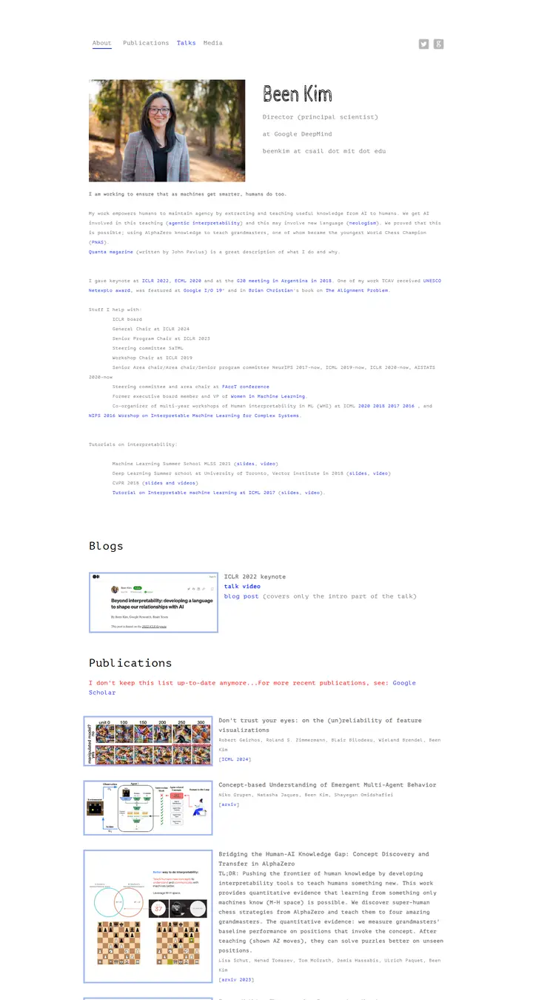

Been Kim
A typewritten lab notebook: grey PT Mono on white, a hand-lettered name, cobalt links that grow a 2px underline, and every paper pinned beside a periwinkle-matted figure.

Checked against the rendered page. Name is a raster image (logo.png); PT Mono weight 300 is requested but only 400 loads.
Why it is here
Distinct monospace typewriter aesthetic with a hand-drawn name. Publications and blogs come with framed figure thumbnails, a good model for visual paper lists. The red notice text is a small blemish.
Overview
Color Palette
Typography
PT Mono
Been Kim, machine learning interpretability
Abstract · Method · Results · BibTeX — 0123456789
Spacing & Shape
Page Modules
Guidelines
More like this

Amir Bar
A clean faculty prospectus in Imperial blue: Inter on white, pill links, and paper cards that lift a few pixels when you reach for them.

Christoph Feichtenhofer
A conference-hall banner in Facebook blue, then a long ledger of papers in red ink, green venues and justified grey abstracts.

David Novotny
A harbour at dusk beside a quiet reading room: a fixed teal-to-midnight panel with right-aligned contact lines, and soft grey text with tangerine links on white.

Jaeyeon Kim
A quiet seminar handout in light Roboto, where one red-highlighted question and a row of mint tags are the only raised voices.

Jonathan Shafer
A keynote opening slide: one full-bleed slate-blue field, a ringed portrait, a 108px name and a centred paragraph you read from across the room.

Junyang Lin
A quiet researcher's folio on warm paper: Garamond headings, teal small labels and hairline-ruled entries.